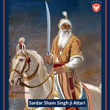
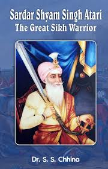

Who Was Sardar Sham Singh Attariwala?
Sardar Sham Singh Attariwala (1785–1846) was a highly respected general in the Sikh Empire known for his unwavering loyalty to Maharaja Ranjit Singh and for his heroic role in the First Anglo-Sikh War[cite: 9]. He became a martyr during the decisive Battle of Sabraon, fighting till his last breath to uphold Sikh sovereignty[cite: 9].

Early Life - Sardar Sham Singh Attariwala Ji
Sardar Sham Singh was born into a noble family in the village of Attari, near Amritsar[cite: 9]. Trained in martial arts and statecraft from a young age, he entered the Khalsa army and rose swiftly through the ranks due to his integrity, valor, and wisdom[cite: 9].
Service Under Maharaja Ranjit Singh - Sardar Sham Singh Attariwala Ji
Sham Singh Attariwala served with distinction under Maharaja Ranjit Singh, playing an important role in military and administrative matters[cite: 9]. He was appointed as a member of the Lahore Durbar and was trusted with key responsibilities in the Sikh Empire[cite: 9].
He was known for his strong discipline, honesty, and refusal to indulge in political corruption — even during times of palace intrigue after the Maharaja's death[cite: 9].

The First Anglo-Sikh War
In 1845–46, tensions between the Sikh Empire and the British East India Company erupted into war[cite: 9]. Sardar Sham Singh Attariwala was one of the few Sikh commanders who remained loyal to the cause, refusing to negotiate or retreat in the face of betrayal and pressure[cite: 9].
The Battle of Sabraon
On February 10, 1846, during the decisive Battle of Sabraon, Sardar Sham Singh donned white garments — a symbol of martyrdom — and mounted his horse knowing he would not return alive[cite: 9]. Surrounded by betrayal from within the ranks, he stood his ground and fought with unmatched bravery against the British forces[cite: 9].
He attained martyrdom on the battlefield, becoming a symbol of Sikh resilience and undying commitment to dharam (righteousness)[cite: 9].

Legacy - Sardar Sham Singh Attariwala Ji
Sardar Sham Singh Attariwala’s sacrifice is remembered as one of the noblest in Sikh history[cite: 9]. He remained loyal when others gave in to fear or greed[cite: 9]. His name is etched in the hearts of Sikhs as a true warrior-saint who lived and died upholding Sikh values of honor, justice, and sovereignty[cite: 9].